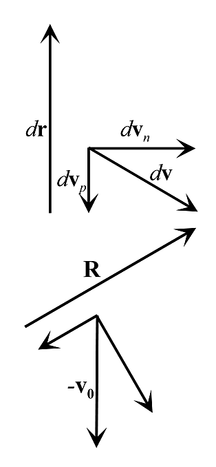
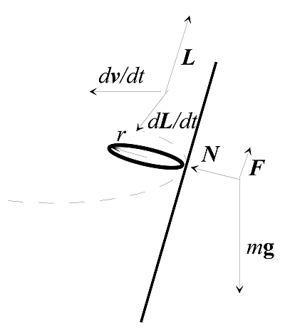

공기 방울의 경우 수면의 높이는 그대로 유지된다. 밀려난 물의 부피가 녹은 얼음 덩어리에서 생긴 “여분의” 물의 부피와 정확히 같기 때문이다.
얼음 속에 얼어 붙은 납 조각의 경우에는 수면의 높이가 낮아진다. 납 조각 때문에 밀려난 물의 부피가 납 조각의 부피보다 크기 때문이다.
양전자(positron)는 양성자보다 훨씬 가벼우므로 문제를 두 부분으로 나누어 생각하는 것이 타당하다.
먼저 양성자는 제자리에 머물러 있는 동안 양전자들이 날아간다. 에너지 보존에 의해
\[4\times\frac12\alpha\Big(\frac1l+\frac1l+\frac{1}{\sqrt2\,l}\Big) = \frac{\alpha}{\sqrt2\,l}+2\frac{mv_{e^+}^2}{2} \tag{1}\]이어야 한다. 여기서 $\alpha = 2.3\times10^{-28}\,\mathrm{J\,m}$이다. 즉
\[v_{e^+} = \sqrt{\frac{\alpha}{ml}\big(4+1/\sqrt2\big)}\approx1100\,\mathrm{m/s} \tag{2}\]이다. 그다음 양성자들이 날아간다.
\[v_p = \sqrt{\alpha/\sqrt2Ml}\approx9.8\,\mathrm{m/s} \tag{3}\]입자에 작용하는 힘은 마찰력과 자기력이므로 $\vec F = -\alpha\vec v+q\vec v\times\vec B$이다. 입자는 $x$-$y$ 평면에 머무르므로 $\vec v$는 $\hat z$ 방향 성분을 갖지 않는다. 벡터곱은 간단한 꼴이 되어
\[\begin{aligned}F_x &= -\alpha v_x+qBv_y,\\ F_y &= -\alpha v_y-qBv_x\end{aligned} \tag{4}\]이다. 이는 다음과 동등하다.
\[\begin{aligned}m\frac{d^2x}{dt^2} &= -\alpha\frac{dx}{dt}+qB\frac{dy}{dt},\\ m\frac{d^2y}{dt^2} &= -\alpha\frac{dy}{dt}-qB\frac{dx}{dt}\end{aligned} \tag{5}\]입자가 $\mathcal{R}_{y>0}$에 들어가는 순간부터 정지하는 순간까지 이 식들을 적분하면
\[\begin{aligned}m\Delta v_x &= -\alpha\Delta x+qB\Delta y,\\ m\Delta v_y &= -\alpha\Delta y-qB\Delta x\end{aligned} \tag{6}\]를 얻는다. 우리가 구하려는 것은 $P$의 좌표, 즉 $(\Delta x, \Delta y)$이다.
처음 속도는 $\vec v = (0, v_0, 0)$이고 나중 속도는 $\vec v = (0,0,0)$이므로 $\Delta v_x = 0$, $\Delta v_y = -v_0$이다. 식 (6)을 $\Delta x$와 $\Delta y$에 대해 풀면
\[\Delta x = \frac{qBmv_0}{\alpha^2+(qB)^2},\qquad \Delta y = \frac{\alpha mv_0}{\alpha^2+(qB)^2} \tag{7}\]이다.

이와 동등한 기하학적 풀이도 있다. 작은 시간 간격 $dt$를 생각하자. 입자의 위치는 $d\mathbf r = \mathbf v\,dt$만큼 변한다. 같은 시간 동안 속도는 운동 방향의 반대쪽으로 $d\mathbf v_p = \frac{\alpha}{m}v\,dt$만큼, 그리고 운동 방향에 수직인 방향으로 $d\mathbf v_n = \frac{qB}{m}v\,dt$만큼 변한다. 속도 변화의 성분들이 변위에 비례한다는 점에 주목하라.
임의의 작은 $dt$에 대해 비슷한 벡터들을 그릴 수 있다. 이들을 모두 더하고, 입자 속도의 전체 변화($-\mathbf v_0$)를 알고 있으므로 마지막 그림을 그릴 수 있다. 벡터 덧셈에서 비례 관계가 유지되므로 전체 변위 $\mathbf R$(물론 그 성분들도)을 쉽게 구할 수 있다.
이 문제의 핵심은 막대가 바닥에 닿기 전에 벽과의 접촉을 잃는다는 것을 깨닫는 것이다. 가장 먼저 할 일은 이 접촉이 정확히 어디에서 끊어지는지 계산하는 것이다.
편의상 $r = \ell/2$라 하자. 막대가 벽에 접촉해 있는 동안 막대의 질량 중심은 반지름 $r$인 원 위를 움직인다는 것을 쉽게 알 수 있다. 벽과, 모서리에서 막대의 질량 중심(CM)까지 그은 반지름 사이의 각을 $\theta$라 하자. (이는 막대와 벽 사이의 각이기도 하다.)
질량 중심이 항상 원 위를 움직인다고 가정하고 문제를 푼 다음, 질량 중심의 수평 속력이 줄어들기 시작하는 점(즉 벽의 수직항력이 음수가 되는 점[물론 수직항력은 음수가 될 수 없다])을 구하겠다.
에너지 보존에 의해 막대의 운동 에너지는 퍼텐셜 에너지의 손실 $mgr(1-\cos\theta)$와 같다. 여기서 $\theta$는 위에서 정의한 각이다. 이 운동 에너지는 질량 중심의 병진 에너지와 회전 에너지의 합으로 나눌 수 있다. 질량 중심은 원 위를 움직이므로 병진 에너지는 단순히 $mr^2\dot\theta^2/2$이다. 회전 에너지는 $I\dot\theta^2/2$이다. ($\theta$가 막대와 연직선 사이의 각이므로 여기서도 질량 중심 병진 운동에서와 같은 $\dot\theta$가 적용된다.) 일반성을 위해 $I\equiv\rho mr^2$으로 두면(우리 막대는 $\rho = 1/3$), 에너지 보존에 의해 $(1+\rho)mr^2\dot\theta^2/2 = mgr(1-\cos\theta)$이다. 따라서 질량 중심의 속력 $v = r\dot\theta$는
\[v = \sqrt{\frac{2gr}{1+\rho}}\sqrt{(1-\cos\theta)} \tag{8}\]이다. 그러므로 수평 속력은
\[v_x = \sqrt{\frac{2gr}{1+\rho}}\sqrt{(1-\cos\theta)}\cos\theta \tag{9}\]이다. $\sqrt{(1-\cos\theta)}\cos\theta$를 미분해 보면 이 속력은 $\cos\theta = 2/3$에서 최대가 된다. (이는 $\rho$에 무관하다.)
따라서 막대는
\[\cos\theta = 2/3 \tag{10}\]일 때 벽과의 접촉을 잃는다.
이 $\theta$ 값을 식 (9)에 넣으면 ($\rho = 1/3$으로 두고) 수평 속력
\[v_x = \frac13\sqrt{2gr} = \frac13\sqrt{gl} \tag{11}\]을 얻는다. 이것은 막대가 벽과의 접촉을 잃은 직후의 수평 속력이며, 바닥은 수평 방향의 힘을 작용하지 않으므로 그 이후로도 계속 이 수평 속력이 유지된다.
두 막대 사이의 충돌을 생각하자. 무거운 막대 끝의 속력을 $V$라 하자. 이 막대는 본질적으로 무한히 무거우므로, 속력 $V$로 움직이는 무한히 무거운 공으로 생각해도 된다. (가벼운 막대에 관한 한 무거운 막대의 병진 자유도는 상관이 없다.)
질량이 크게 다른 두 공의 충돌이라는 (더 쉬운) 문제와 같은 방식으로, 이 문제를 충돌 직전 무한히 무거운 공의 정지 기준틀에서 풀겠다. (실험실 기준틀에서도 풀 수 있지만, 여기서의 방법이 조금 덜 번거롭다.) 상황은 질량 $m$, 길이 $2r$, 관성 모멘트 $\rho mr^2$인 막대가 속력 $V$로 고정된 벽에 다가오는 문제로 바뀐다. 충돌 뒤 막대의 거동을 구하기 위해 (1) 에너지 보존과 (2) 접촉점에 대한 각운동량(angular momentum) 보존을 쓰겠다.
충돌 뒤 막대의 질량 중심의 속력을 $u$, 각속도를 $\omega$라 하자.
벽은 무한히 무거우므로 운동 에너지를 전혀 얻지 않는다. 따라서 $E$의 보존으로부터
\[\frac12 mV^2 = \frac12 mu^2+\frac12(\rho mr^2)\omega^2 \tag{12}\]이다. 접촉점에 대한 처음 각운동량은 $L = mrV$이므로, $L$의 보존으로부터 (충돌 뒤의 $L$을 질량 중심의 $L$과 질량 중심에 대한 상대 $L$로 나누면)
\[mrV = mru+(\rho mr^2)\omega \tag{13}\]이다. 식 (12)와 (13)을 $u$와 $r\omega$에 대해 $V$로 나타내어 풀면
\[u = V\frac{1-\rho}{1+\rho},\qquad\text{그리고}\qquad rw = V\frac{2}{1+\rho} \tag{14}\]이다. (다른 해인 $u = V$, $r\omega = 0$은 막대가 벽에 닿지 않고 지나치는 경우를 나타낸다.)
실험실 기준틀로 돌아가면(즉 속력 $u$에서 $V$를 빼면), 충돌로 인해 가벼운 막대는 원래 $V$와 같은 방향으로 질량 중심 속력 $v = 2V\rho/(1+\rho)$를 얻는다. 그러나 가벼운 막대의 먼 쪽 끝은 $r\omega = 2V/(1+\rho)$와 같은 뒤쪽 방향 회전 속력을 가진다. 이 회전 속력은 질량 중심 속력보다 크므로, 가벼운 막대의 먼 쪽 끝은 원래 $V$의 반대 방향으로
\[V' = r\omega-v = V\frac{2(1-\rho)}{1+\rho} \tag{15}\]의 속력으로 움직인다.
다음 충돌에서도 같은 분석이 성립한다. 다시 말해, 막대들의 아래쪽 끝은 공비가 $2(1-\rho)/(1+\rho)$인 등비수열을 이루는 속력으로 움직인다. 이 비가 1보다 작으면(즉 $\rho>1/3$이면) $n\to\infty$일 때 속력은 0으로 간다. 1보다 크면(즉 $\rho<1/3$이면) $n\to\infty$일 때 속력은 무한대로 간다. 1과 같으면(즉 $\rho = 1/3$이면) $n\to\infty$일 때 속력은 $n$에 무관하다.
따라서
\[\rho = \frac13 \tag{16}\]이 구하는 답이다.
균일한 막대는 $\rho = 1/3$을 가진다(보통 $I = m\ell^2/12$, $\ell = 2r$의 꼴로 쓴다).
$\rho$가 엄밀히 0인 경우에는 막대들의 질량 중심은 정지해 있고 회전 속력은 공비 2인 등비수열을 이루겠지만, 우리는 이것을 올바른 답으로 보지 않는다. 유한한 질량을 가진 실제 물체는 유한한 관성 모멘트를 가진다. 그러면 올바른 물리적 접근은 $\rho\to0$인 극한을 취하는 것인데, 그 경우 $n\to\infty$인 극한은 무한대이다.
입자에 작용하는 힘은 중력($mg$)과 원뿔이 작용하는 수직항력($N$)이다. 지금 상황에서는 연직 방향의 알짜힘이 없으므로
\[N\sin\theta = mg \tag{17}\]이다. 즉 $N = mg/\sin\theta$이다. 따라서 안쪽 방향의 수평력 $N\cos\theta$는 $mg/\tan\theta$와 같다. 이 힘이 반지름 $h\tan\theta$인 원 위를 움직이는 입자의 구심 가속도(centripetal acceleration)를 감당해야 한다. 그러므로 $mg/\tan\theta = m(h\tan\theta)\omega^2$이고
\[\omega = \sqrt{\frac gh}\frac{1}{\tan\theta} \tag{18}\]이다.

고리에 작용하는 힘은 중력($mg$), 원뿔이 작용하는 수직항력($N$), 그리고 원뿔을 따라 위쪽을 향하는 마찰력($F$)이다. 지금 상황에서는 연직 방향의 알짜힘이 없으므로
\[N\sin\theta+F\cos\theta = mg \tag{19}\]이다. 안쪽 방향의 수평력이 구심 가속도를 감당한다는 사실로부터
\[N\cos\theta-F\sin\theta = m(h\tan\theta)\omega^2 \tag{20}\]을 얻는다.
이제 고리에 작용하는 토크 $\vec\tau$를 고려해야 한다. 토크는 오로지 $F$에 의한 것이다(중력은 토크를 주지 않고, 문제의 가정 (2)에 의해 $N$은 고리의 중심을 지나기 때문이다). 따라서
\[\tau = rF \tag{21}\]이며, 그 방향은 원운동을 따르는 방향이다. $\vec\tau = d\vec L/dt$이므로 이제 $d\vec L/dt$를 구해야 한다.
$\vec L$은 두 부분으로 이루어져 있다. 하나는 원뿔의 축 둘레를 도는 고리의 질량 중심 운동에서 온다. $\vec L$의 이 부분은 변하지 않으므로 $d\vec L/dt$를 계산할 때 무시해도 된다. 다른 하나는 고리의 회전에서 온다. 이 부분을 $\vec L'$이라 하자. 이는 원뿔을 따라 위쪽을 향하므로, $\vec L'$ 벡터는 원뿔을 그리며 $\vec L'$의 끝은 반지름 $L'\sin\theta$인 원 위를 움직인다. 이 원운동의 진동수는 물론 위와 같은 $\omega$이다. 따라서
\[\frac{d\vec L}{dt} = \frac{d\vec L'}{dt} = \omega L'\sin\theta \tag{22}\]이다(방향은 원운동의 방향).
따라서 $\vec\tau = d\vec L/dt$로부터
\[rF = \omega L'\sin\theta \tag{23}\]이다.
그런데 $L' = mr^2\omega'$이며, 여기서 $\omega'$은 고리의 각속력이다. 그리고 $\omega'$과 $\omega$는 $r\omega' = (h\tan\theta)\omega$(미끄러지지 않고 구르는 조건)로 연결된다는 것을 안다1. 따라서 $L' = mr(h\tan\theta)\omega$이다. 이를 식 (23)에 쓰면
\[F = m\omega^2(h\tan\theta)\sin\theta \tag{24}\]를 얻는다.
1 사실 이것은 엄밀히 맞지는 않다. 지구가 1년에 365번이 아니라 366번 자전하는 것과 같은 이유 때문이다. 그러나 작은 $r$의 극한에서는 충분히 성립한다.
식 (19), (20), (24)에는 세 미지수 $N$, $F$, $\omega$가 있다. 식 (19)에 $\cos\theta$를, 식 (20)에 $\sin\theta$를 곱하고 그 차를 취하면
\[F = mg\cos\theta-m\omega^2(h\tan\theta)\sin\theta \tag{25}\]를 얻는다. 이 $F$의 식을 식 (24)의 $F$와 같게 놓으면
\[\omega = \sqrt{\frac{g}{2h}}\frac{1}{\tan\theta} \tag{26}\]이다. 이 진동수는 (a)에서 구한 진동수의 $1/\sqrt2$배이다.
참고: 관성 모멘트가 $\rho mr^2$인 물체를 생각하면(우리의 고리는 $\rho = 1$), 위와 같은 논리로 식 (26)의 “2”가 단순히 $(1+\rho)$로 바뀐다는 것을 보일 수 있다.
첫 번째 풀이:
토막과 입자의 충돌 가운데 하나를 생각하자. 충돌 뒤 토막과 입자의 속력을 각각 $V$와 $v$라 하자. 충돌은 벽으로부터 거리 $\ell$인 곳에서 일어난다고 하자. 우리는 양 $\ell(v-V)$가 불변량(invariant)이라고, 즉 모든 충돌에 대해 같다고 주장한다. 증명은 다음과 같다.
다음 충돌의 위치 $\ell'$을 구해 보자. 다음 충돌까지의 시간은 $Vt+vt = 2\ell$로 주어진다(두 물체가 이동한 거리의 합이 $2\ell$이기 때문이다). 따라서 $\ell' = \ell-Vt$이므로
\[\ell' = \ell(v-V)/(v+V) \tag{27}\]이다.
이제 탄성 충돌에서 충돌 전 입자들의 상대 속력은 충돌 후의 상대 속력과 같다는 편리한 사실을 이용한다. (이는 질량 중심 기준틀에서 생각하면 가장 쉽게 증명된다.) 따라서 다음 충돌 뒤 토막과 입자의 속력을 각각 $V'$과 $v'$이라 하면
\[v+V = v'-V' \tag{28}\]이다. 이를 식 (27)에 쓰면
\[\ell'(v'-V') = \ell(v-V) \tag{29}\]가 되어 보이고자 한 것이 증명된다.
이 불변량의 값은 무엇인가? 첫 번째 충돌 뒤 토막은 ($m/M$ 차수의 보정을 제외하면) 본질적으로 속력 $V_0$으로 계속 움직이고, 입자는 ($m/M$ 차수의 보정을 제외하면) 본질적으로 $2V_0$과 같은 속력을 얻는다. (후자는 무거운 토막의 기준틀에서 생각하면 가장 쉽게 알 수 있다.) 따라서 불변량 $\ell(v-V)$는 본질적으로 $L(2V_0-V_0) = LV_0$과 같다.
벽까지의 최소 거리를 $L_c$라 하자. 토막이 벽에 가장 가까운 이 지점에 있을 때 토막의 속력은 0이다. 따라서 토막의 처음 운동 에너지는 모두 입자의 것이 된다. 그러므로 $v = V_0\sqrt{M/m}$이다. 그래서 이 지점에서 불변량은 $LV_0\approx L_c(V_0\sqrt{M/m}-0)$을 뜻하며, 따라서
\[L_c\approx L\sqrt{\frac mM} \tag{30}\]이다.
두 번째 풀이:
토막의 속력을 $V(t)$, 입자의 속력을 $v(t)$라 하자. 벽에서 토막까지의 거리를 $x(t)$라 하자.
토막은 처음 운동 에너지가 모두 입자로 옮겨졌을 때 벽에 가장 가까워진다. 즉
\[\frac12 mv^2 = \frac12 MV_0^2 \tag{31}\]이다. 따라서 이 지점에서 $v = V_0\sqrt{M/m}$이다. 그러므로 $v(t)$와 $x(t)$ 사이의 관계를 찾을 수 있으면 문제는 해결된다.
$M\gg m$이면 곱 $v(t)x(t)$가 본질적으로 $V_0L$과 같다고 주장한다. 증명은 다음과 같다.
충돌이 매우 잦고 $v$가 매우 커서, $x$가 크게 변하지 않는 짧은 시간 $dt$ 동안 많은 횟수 $dn$의 충돌이 일어나는 나중 시각들을 생각하자.
입자는 시간 $dt$ 동안 거리 $v\,dt$를 이동하고, 토막에서 벽까지 갔다가 돌아오는 거리는 $2x$이므로
\[dn = \frac{v\,dt}{2x} \tag{32}\]이다.
토막과 입자의 각 충돌은 입자의 속력을 본질적으로 $2V$만큼 늘린다($M\gg m$이므로 토막은 본질적으로 무한히 무겁다). 따라서 시간 $dt$ 동안 입자 속력의 증가는
\[dv = 2V\,dn = \frac{Vv\,dt}{x} \tag{33}\]이다. 그런데 $V = -dx/dt$이므로
\[dv = -\frac{v\,dx}{x} \tag{34}\]이다. $v$로 나누고 적분하면 $\ln v = -\ln x+(\text{const})$이다. 따라서
\[vx = C \tag{35}\]이다.
즉 입자의 속력은 벽과 토막 사이의 거리에 반비례한다.
이는 입자를 1차원 기체로 생각할 때 우리가 기대하는 바로 그것이다. 실제로 그러한 기체의 단열 압축(adiabatic compression)은 불변량 $PV^\gamma = \mathit{const}$로 기술되며, 여기서
\[\gamma = \frac{C_P}{C_V} = \frac{C_V+1}{C_V} = \frac{\frac i2+1}{\frac i2} \tag{36}\]이고 $i$는 자유도의 수이다. 1차원 기체에서는 $i = 1$이므로 $\gamma = 3$이고 $PV^3 = \mathit{const}$이다. $PV$는 $T$, 즉 $v^2$에 비례하고, 1차원의 경우 $V$는 $x$이므로 $v^2x^2 = \mathit{const}$, 즉 $vx = C$이다.
이제 처음 몇 번의 충돌을 살펴 상수 $C$를 정해야 한다.
첫 번째 충돌은 입자에 속력 $2V_0$을 준다(정확히 $2V_0$은 아니지만 오차는 $m/M$ 차수이다). 충돌 뒤 토막은 (본질적으로) 속력 $V_0$으로 계속 움직이므로, 두 번째 충돌이 (대략) $x = L/3$에서 일어난다는 것을 쉽게 계산할 수 있다.
두 번째 충돌 뒤 입자는 속력 $4V_0$을 가지고2 토막은 계속 속력 $V_0$을 가지므로, 세 번째 충돌은 $x = L/5$에서 일어난다는 것을 알 수 있다.
세 번째 충돌 뒤 입자는 속력 $6V_0$을 가지고 토막은 계속 속력 $V_0$을 가지므로, 네 번째 충돌은 $x = L/7$에서 일어난다는 것을 알 수 있다.
일반적으로 $k$번째 충돌은 $L/(2k-1)$에서 일어난다. 그리고 입자는 충돌 전에 속력 $2(k-1)V_0$을, 충돌 후에 $2kV_0$을 가진다. 이는 $k$가 너무 크지 않은 한 $m/M$ 차수의 보정까지 성립한다.
2 이 값과 다음 몇 문단의 다른 모든 수는 $M\gg m$의 극한에서 임의로 정확해지는 근삿값으로 이해해야 한다.
$M/m$이 충분히 크면, 이 영역이 짧은 시간 동안 많은 충돌이 일어나는 위의 영역과 겹치게 할 수 있다. 따라서 $M/m$이 매우 크면 $k$를 크게 할 수 있으므로 $C = vx\approx(2kV_0)L/(2k-1)\approx V_0L$을 얻는다. 그러므로
\[vx\approx V_0L \tag{37}\]이다.
식 (31)에 $v\approx V_0L/x$를 쓰면, 토막이 벽에 가장 가까이 다가가는 거리 $x_c$는
\[x_c\approx L\sqrt{\frac mM} \tag{38}\]이다.
첫 번째 풀이:
토막과 입자의 속력을 각각 $V$와 $v$라 하자.
한 번의 충돌로 인한 토막 운동량의 감소는 그 충돌로 인한 입자 운동량의 변화와 같으며, 이는 대략 $2mv$와 같다(여기서는 $V$가 $v$에 비해 작다고 가정하는데, 처음 몇 번의 충돌 이후에는 실제로 그렇다). 시간 $dt$ 동안 $dn$번의 충돌이 있다면, 시간 $dt$ 동안의 운동량 보존으로부터 (짧은 간격 $dt$ 동안 $v$가 거의 일정하다고 가정하면)
\[M\,dV = -2mv\,dn \tag{39}\]이다. 에너지 보존 $MV^2/2+mv^2/2 = MV_0^2/2$를 쓰면 $v$를 $V$로 나타낼 수 있다.
\[v = V_0\sqrt{\frac Mm}\sqrt{1-\frac{V^2}{V_0^2}} \tag{40}\]그러면 식 (39)로부터 (변수를 $y\equiv V/V_0$으로 바꾸고, $V = 0$, 따라서 $y = 0$에 해당하는 벽에 가장 가까운 지점까지 적분하면)
\[\frac12\sqrt{\frac Mm}\int_1^0\frac{dy}{\sqrt{1-y^2}} = -\int_0^N dn = -N \tag{41}\]이다. (실제로 이 피적분 함수는 $V$가 $V_0$에 가까울 때, 즉 $y$가 1에 가까울 때는 성립하지 않는다. 그곳에서는 식 (39)가 성립하지 않기 때문이다. 그러나 그곳에서 생기는 오차는 전체 충돌 횟수에 비해 작다.)
적분하면 $\arcsin y$가 되고, 1과 0 사이에서 계산하면 $-\pi/2$가 된다. 따라서 전체 충돌 횟수는
\[N\approx\frac\pi4\sqrt{\frac Mm} \tag{42}\]이다.
두 번째 풀이:
어떤 충돌 뒤 토막과 입자의 속력을 각각 $V$와 $v$라 하자. 그다음 충돌 뒤 토막과 입자의 속력을 각각 $V'$과 $u'$이라 하자. 이 두 번째 충돌에서의 운동량 보존으로부터
\[MV-mv = MV'+mv' \tag{43}\]이다. 이 식과 식 (28)을 함께 쓰면 $V'$과 $v'$을 $V$와 $v$로 나타낼 수 있다. 행렬로 쓰면
\[\begin{pmatrix}V'\\ v'\end{pmatrix} = \begin{pmatrix}\dfrac{M-m}{M+m} & \dfrac{-2m}{M+m}\\[6pt] \dfrac{2M}{M+m} & \dfrac{M-m}{M+m}\end{pmatrix}\begin{pmatrix}V\\ v\end{pmatrix} \tag{44}\]을 얻는다. 이 행렬의 고유벡터(eigenvector) $A_i$와 고윳값(eigenvalue) $\lambda_i$는
\[A_1 = \begin{pmatrix}1\\ -i\sqrt{\frac Mm}\end{pmatrix},\quad \lambda_1 = \frac{M-m}{M+m}+\frac{2i\sqrt{Mm}}{M+m}\equiv e^{i\theta} \tag{45}\] \[A_2 = \begin{pmatrix}1\\ i\sqrt{\frac Mm}\end{pmatrix},\quad \lambda_2 = \frac{M-m}{M+m}-\frac{2i\sqrt{Mm}}{M+m}\equiv e^{-i\theta} \tag{46}\]이다. 여기서 $\theta\equiv\arctan\big(2\sqrt{Mm}/(M+m)\big)\approx2\sqrt{m/M}$이다.
초기 조건은 $(V, v) = (V_0, 0) = (V_0/2)(A_1+A_2)$이다. 따라서 $n$번째 충돌 뒤의 속력은
\[\begin{pmatrix}V_n\\ v_n\end{pmatrix} = \frac{V_0}{2}(\lambda_1^nA_1+\lambda_2^nA_2) \tag{47}\]로 주어진다.
$\lambda_1 = e^{i\theta}$, $\lambda_2 = e^{-i\theta}$로 쓰고 $A_i$의 구체적인 꼴을 쓰면
\[\begin{pmatrix}V_n\\ v_n\end{pmatrix} = \frac{V_0}{2}(e^{in\theta}A_1+e^{-in\theta}A_2) = V_0\begin{pmatrix}\cos n\theta\\ \sqrt{\frac Mm}\sin n\theta\end{pmatrix} \tag{48}\]이다.
토막은 $V_N = 0$일 때, 즉 $N\theta = \pi/2$일 때 벽에 가장 가까이 다가간다. $\theta$의 정의를 쓰면 다음을 얻는다.
\[\begin{aligned}N &= \frac\pi2\frac{1}{\arctan\frac{2\sqrt{Mm}}{M+m}}\\ &\approx\frac\pi4\sqrt{\frac Mm}\end{aligned} \tag{49}\]